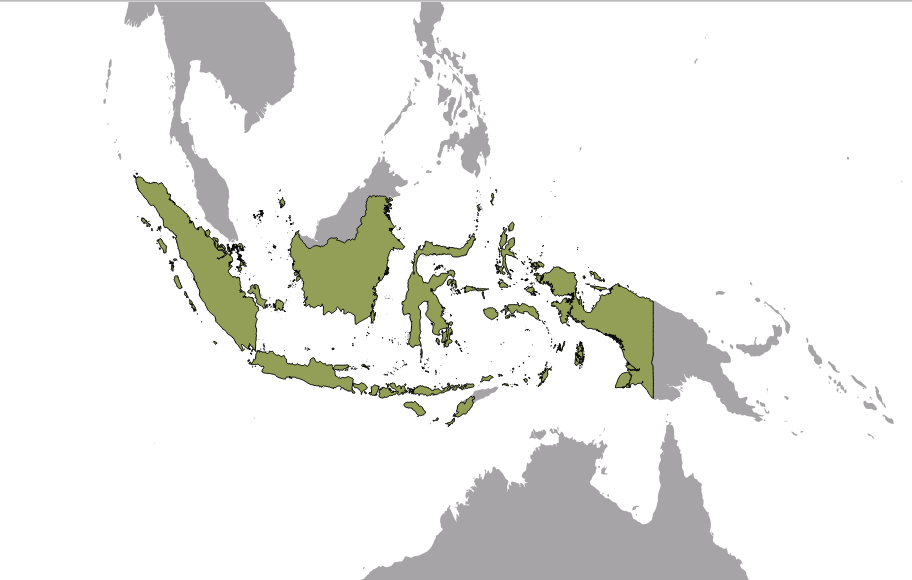
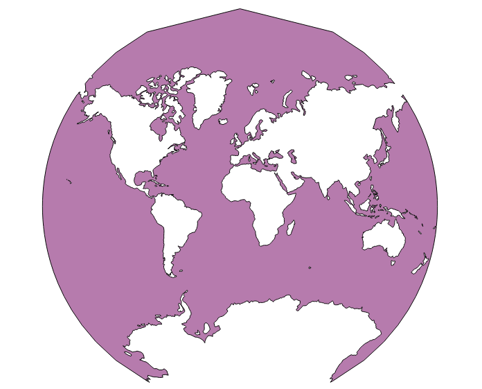

Module 5: Map Projection Basics¶
Learning Objectives
Understand Coordinate Reference Systems (CRS)
Identify the CRS of a vector dataset
Do ‘on the fly’ reprojection
Save dataset with a different CRS
Create a custom projection
We’ve talked a little bit about Coordinate Reference Systems (CRSs) previously, but haven’t covered it in depth. In this module, we’ll look more at what a CRS means practically, and how it affects our work in QGIS.
1. Coordinate Reference Systems (CRS)¶
The CRS that all the data, as well as the map itself are in right now is called WGS84. This is a very common Geographic Coordinate System (GCS) for representing data. But there’s a problem, as we will see.
Open the project
world.qgs, located in theqgis/folder. Zoom in to Indonesia by using the Zoom In tool.

Set the scale in the Scale field, which is in the status bar along the bottom of the screen. While over Indonesia, set this value to 1:20000000 (one to twenty million).
Now pan around the map while keeping an eye on the Scale field.
Do you notice the scale changing? This is because you’re moving away from the one point that you zoomed into at 1:20000000, which was at the centre of your screen. All around that point, the scale is different.
To understand why, think about a globe of the Earth. It has lines running vertically along it from North to South. These longitude lines are far apart at the equator, but they meet at the poles. In a GCS, you’re working on this sphere, but your screen is flat. When you try to represent the sphere of the earth on a flat surface, it becomes distorted, as if you took an orange peel and tried to flatten it. What this means on a map is that the longitude lines stay equally far apart from each other, even at the poles (where they are supposed to meet). This means that, as you travel away from the equator on your map, the scale of the objects that you see gets larger and larger. What this means for us, practically, is that there is no constant scale on our map!
To solve this, we’ll use a Projected Coordinate System (PCS) instead. A PCS projects or converts the data in a way that makes allowance for the scale change and corrects it. Therefore, to keep the scale constant, we should re-project our data to use a PCS.
Note
Projection is the act of taking coordinates on a sphere (like the earth), and manipulating them so that they can be displayed on a flat surface.
2. “On the fly” reprojection¶
Every QGIS project has a CRS, and each of the data layers has a CRS too. Often these are the same. Your project may be in WGS84, and the layers too. But sometimes you will add a layer that is not in the same CRS as the project, and you need QGIS to convert it so that it can be displayed along with the rest of the data. The term that we use for this is reprojecting ‘on the fly’.
To enable ‘on the fly’ projection, click on the CRS Status button in the status bar along the bottom of the QGIS window:
In the dialog that appears, check the box next to Enable ‘on the fly’ CRS transformation.
Type NSIDC into the Filter field. One CRS (“NSIDC EASE-Grid Global”) will appear in the list below.
Click on it to select it, and then click OK.
Notice how the shape of Indonesia changes. All projections work by changing the apparent shapes of objects on Earth.
Zoom in to a scale of 1:20000000 again, as before.
Pan around the map.
Notice that the scale stays the same! ‘On the fly’ reprojection is useful for combining datasets that are in different CRSes.
Deactivate ‘on the fly’ reprojection again, by unchecking the box next to Enable ‘on the fly’ CRS transformation.
Load the vector layer
Indonesia.shplocated inqgis/peta_dunia/.
Note
You may need to unzip peta_dunia.zip first in order
to open the shapefile.
What do you notice? The layer is not visible! But that’s easy to fix, right?
Right-click on the new layer in the Layers panel.
Click Zoom to Layer Extent.
OK, so now we see Indonesia… but where is the rest of the world?
It turns out that we can zoom between these two layers, but we can’t ever see them at the same time. That is because their Coordinate Reference Systems are so different. The continents layer is in degrees, but the Indonesia layer is in metres. In other words, one feature in the continents layer might be 8.5 degrees away from the equator, but the same feature in the Indonesia layer might be 900000 metres away from the equator.
8.5 degrees and 900000 metres is about the same distance, but QGIS does not know that! One of our layers must be reprojected to match the other layer. To correct this, again enable tranformation:
Activate Enable ‘on the fly’ CRS transformation as before.
Again click Zoom to Layer extent on the Indonesia dataset.
Now, because they’re made to project in the same CRS, the two datasets fit perfectly:
When combining data from different sources, it’s important to remember that they might not be in the same CRS. ‘On the fly’ reprojection helps you to display them together.
3. Datasets with different CRSes¶
It’s great that QGIS can reproject layers on the fly so that we can work with them in the same project. But this requires more time for our computer to reproject the layers, and can slow down our work. For this, or for other reasons, we might want to be able to reproject a dataset one time, and save it with the new projection.
Let’s reproject the Indonesia layer so that it is in the same CRS as the project. To do this, we will need to export the data to a new file using a new projection.
Right-click on the Indonesia layer in the Layers panel.
Select Save As… in the menu that appears. You will be shown the Save vector layer as… dialog.
Click the Browse button next to the Save as field.
Navigate to
qgis/peta_dunia/and specify the name of the new layer as Indonesia_terproyeksi.shp.Leave the encoding unchanged.
Change the value of the CRS in drop-down box to Project CRS.
Check the box next to Add saved file to map.
The Save vector layer as… dialog now looks like this:
Click OK and after a minute, above your map extent you should be presented with:
Wait until the notification disappear.
Now your new layer, Indonesia_terproyeksi, will be shown in the layers panel. If you turn off ‘on the fly’ reprojection, this layer will still be shown correctly, because it has been reprojected into the same CRS as the project (and the continents layer).
4. Creating a custom projection¶
There are many more projections than just those included in QGIS by default. You can even create your own projections. Let’s see how this works.
Start a new project.
Load the vector layer
oceans.shplocated inqgis/peta_dunia/.Go to and you’ll see this dialog:
We will create a projection known as Van der Grinten I. This interesting projection represents the earth on a circular field instead of a rectangular field, as most projections do.
Enter Van der Grinten I in the Name field.
In the Parameters field, enter the following string:
+proj=vandg +lon_0=0 +x_0=0 +y_0=0 +R_A +a=6371000 +b=6371000 +units=m +no_defs
Click OK.
Go to .
Enable ‘on the fly’ reprojection.
Search for your newly defined projection by typing it into the Filter box:
You should see it appear in the box at the bottom. Select it, and click OK.
Once you’ve applied the new projection, the map will be reprojected like this:
